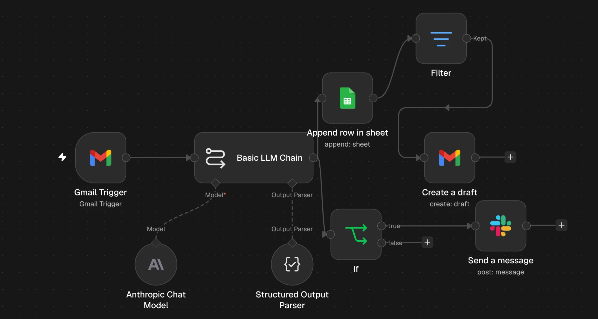

Start
trigger
Patrik Poslušný
AI automatizace · zákaznická komunikace
Stavím automatizace s AI, které lidem šetří čas při rutinní práci. Zlín, otevřený práci na dálku i hybridně.
Start
trigger
AI automatizace · zákaznická komunikace
Stavím automatizace s AI, které lidem šetří čas při rutinní práci. Zlín, otevřený práci na dálku i hybridně.
preview
Vstup · příchozí e-mail
Rollo beschädigt angekommen!!!
Guten Tag, ich habe heute mein Rollo „Tag und Nacht“ erhalten (Bestellung 20261342) und es ist komplett beschädigt – die Kassette ist gebrochen und der Stoff ist eingerissen. … Ich erwarte eine schnelle Lösung. Mit freundlichen Grüßen, Thomas Becker
Kliknutím na „Nový e-mail“ zobrazíte vstup.
Ukázka s reálným výstupem z testu mého workflow. E-mail je testovací, e-shop fiktivní.
O mně · trigger
Maturoval jsem z elektrotechniky na SPŠ Zlín (2026). V klientském kontaktním centru Komerční banky denně komunikuji s klienty po telefonu, takže dobře vím, co zákazníci potřebují a kolik času zabere rutina.
Ve volném čase stavím projekty s AI: od automatizace zákaznických e-mailů přes CRM pro realitní makléře v Notionu, které prodávám na Etsy, až po vlastního trading bota. Baví mě věci dotáhnout do funkčního stavu, otestovat je a umět vysvětlit, jak fungují.
Projekty · 3 items
Automatizace pro e-shop, který prodává po celé Evropě a dostává e-maily v mnoha jazycích. AI každý e-mail zařadí (jazyk, kategorie, číslo objednávky, nálada, urgentnost), zapíše ho do přehledové tabulky, připraví koncept odpovědi v jazyce zákazníka a u urgentních reklamací pošle upozornění do Slacku.
V prodeji · 5★ recenze
Sólo projekt, ve kterém jsem s pomocí AI nástrojů navrhl, postavil a uvedl na trh kompletní digitální produkt: od systému v Notionu přes branding a video až po e-shop a marketing. Produkt je živý na Etsy, má první prodej a 5★ recenzi.
Ve vývoji
Systém, který sbírá živá data z blockchainu, analyzuje je a testuje obchodní strategie na realistických nákladech. Teď běží nepřetržitě na cloudovém serveru a nejlepší strategii testuje v ostrém provozu s virtuálními penězi. Nejsem programátor: kód psal AI agent Claude Code, já projekt vedl, určoval cíle a pravidla, kontroloval výstupy, testoval a nasazoval.
Zkušenosti · executions
Dovednosti · items
Kontakt · send message
Životopis v PDF rád pošlu e-mailem.
Automatizace pro e-shop, který prodává po celé Evropě a dostává e-maily v mnoha jazycích. AI každý e-mail zařadí (jazyk, kategorie, číslo objednávky, nálada, urgentnost), zapíše ho do přehledové tabulky, připraví koncept odpovědi v jazyce zákazníka a u urgentních reklamací pošle upozornění do Slacku.

Sólo projekt, ve kterém jsem s pomocí AI nástrojů navrhl, postavil a uvedl na trh kompletní digitální produkt: od systému v Notionu přes branding a video až po e-shop a marketing. Produkt je živý na Etsy, má první prodej a 5★ recenzi.
Systém, který sbírá živá data z blockchainu, analyzuje je a testuje obchodní strategie na realistických nákladech. Teď běží nepřetržitě na cloudovém serveru a nejlepší strategii testuje v ostrém provozu s virtuálními penězi. Nejsem programátor: kód psal AI agent Claude Code, já projekt vedl, určoval cíle a pravidla, kontroloval výstupy, testoval a nasazoval.
Data ukázala, že většina „rychlých zisků“ na memecoinech je pro běžného obchodníka ztrátová. Rozhodnutí podle dat mě ochránilo před ztrátou skutečných peněz.